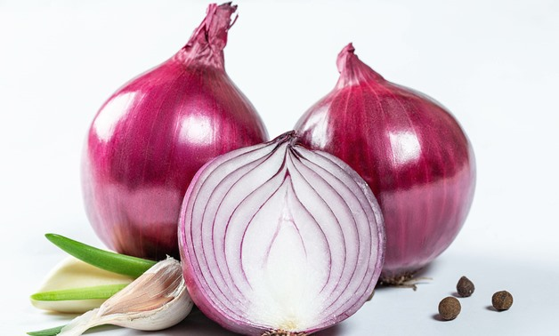
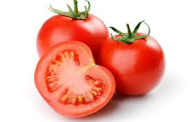

Vegetable
Onion
Tomato
Potato
- Vegetables are parts of plants that are consumed by humans or other animals as food. The original meaning is still commonly used and is applied to plants collectively to refer to all edible plant matter, including the flowers, fruits, stems, leaves, roots, and seeds. The alternate definition of the term is applied somewhat arbitrarily, often by culinary and cultural tradition. It may exclude foods derived from some plants that are fruits, flowers, nuts, and cereal grains, but include savoury fruits such as tomatoes and courgettes, flowers such as broccoli, and seeds such as pulses.
- Onion

-
The onion (Allium cepa L., from Latin cepa "onion"), also known as the bulb onion or common onion, is a vegetable that is the most widely cultivated species of the genus Allium.
Its close relatives include the garlic, shallot, leek, chive, and Chinese onion.
TOP
- Tomato

-
The tomato is the edible, often red, berry of the plant Solanum lycopersicum,commonly known as a tomato plant. The species originated in western South America and Central America. The Nahuatl (Aztec language) word tomatl gave rise to the Spanish word tomate, from which the English word tomato derived. Its domestication and use as a cultivated food may have originated with the indigenous peoples of Mexico. The Aztecs used tomatoes in their cooking at the time of the Spanish conquest of the Aztec Empire, and after the Spanish encountered the tomato for the first time after their contact with the Aztecs, they brought the plant to Europe. From there, the tomato was introduced to other parts of the European-colonized world during the 16th century.
TOP
- Potato

-
The potato is a root vegetable native to the Americas, a starchy tuber of the plant Solanum tuberosum, and the plant itself, a perennial in the family Solanaceae.
Wild potato species, originating in modern day Peru, can be found throughout the Americas, from the United States to southern Chile.The potato was originally believed to have been domesticated by indigenous peoples of the Americas independently in multiple locations,
but later genetic testing of the wide variety of cultivars and wild species traced a single origin for potatoes.
TOP